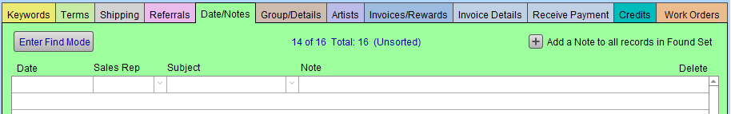
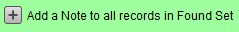
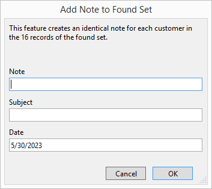
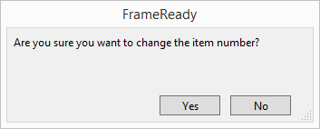

Track Ads and Promo Campaigns
There are a number of ways to make it easier to track your campaign, for example, if customers can bring in a card, ad, coupon, etc. Whatever type of campaign you are running, you need to be able to measure it in several different ways.
How to Tracking Advertising & Promotional Campaigns
Answer these Three Questions
A great deal of time and money can be spent on promoting your business. So, it is important to know how successful your campaign was.
-
Did the customer make a purchase during the campaign?
-
Of the customer’s who made a purchase during the campaign, how did their purchase compare to your shop average?
-
Did the customer make subsequent purchases after the sale or were they a one-time shopper?
Did the Customer make a Purchase during the Campaign?
In order to answer this, you need to know two things:
-
Who is eligible to purchase?
-
Who did purchase?
If you mailed a promotional card/coupon/flyer to a group of customers in your Contacts file, then you can document it under the Date/Notes tab for every person with one button. Here’s how:
How to Note which Contacts are Included in the Campaign
-
Find the group of records in your Contacts file to whom you wish to market, and export the list for mailing or print your address labels.
-
Click the Form View button and, in this one customer’s record, open the bright green Date/Notes tab.

-
In the Date/Notes tab, click the Add note button to all records in the found set.

-
A dialog box appears.

-
In the Note field, enter the code or words to describe your promotion.
Codes can be easier to search while individual words can give you broader results, e.g. Find anyone who has received any type of “coupon” or find only “CESC” clients. The current date is automatically entered. -
Click OK.
The note is added to each record in your found set.
How to Track which Contacts Responded to the Campaign
-
The next step is to set up an easy way to track the effectiveness of the promotion by creating a special record in the Product file.
-
You can have multiple promotion records and have a barcode on the card/coupon/flyer to let you scan it quickly onto their Invoice. Here’s how:
-
Go to Main Menu and click the New Product button.
-
Change the Item # to match your code. e.g. CESC-2023
FrameReady asks you to confirm the change.

-
Enter the Description.
Note: this will appear on the Invoice. -
In the Category field, choose Promotion .
If it is not in the list, then type it directly into the Category field (this adds it to your list for future use). -
If your promotion is for a dollar value, enter the amount into the Retail field as a negative number.
(A positive dollar value will increase the order.) -
If it is for a percentage, then leave the field blank and only fill it out when the Invoice is created.
-
In the Qty on Hand field, enter in the number of promotional pieces you have printed, mailed, or distributed.
Each time this product is added to an Invoice, FrameReady will count how many promotions were redeemed.
How to Add the Promotion to an Invoice
The final step is to enter the promo code on the Invoice when the customer makes a purchase. Here’s how:
-
After creating the Invoice, click the Search Item icon (magnifying glass) and type or scan the promo code into the Item Number field and click Search.
The information related to the code is entered.
To enter a percentage promotion instead of a dollar amount:
-
Enter the amount into the % field, as a decimal (e.g. 0.75) to see the dollar value in the Savings field.
-
Drag the amount that appears in the Savings field into the Unit Price field and delete the % number so that you do not give the discount twice.
Tip: You may want to change your Description to identify the percentage amount of the discount. Eg. “10% Off Custom Framing”.
In the Products file, the record you created for this promotion identifies how many coupons/cards/promos have been redeemed.
In the Invoices file, perform a Find for your promotional code, e.g. CESC . At the bottom of the list view, you will see the total amount spent because of this promotion and, in the Savings column, how much money was discounted in order to bring in the sales. This is part of the cost in running the promotion.
In the Contacts file, perform a find for the customers with the mailing code in their note field, e.g. CESC Christmas Early Shopper Coupon, AND, before you click Perform Find, also enter the date range for your campaign in the Invoice Date field. This will find all customers who were on your list and responded to your campaign.
Tip: Enter a new note in all of these records to identify them as responding to your promotion. Eg. CESC Redeemed.
Of the Customers who made a Purchase during the Campaign, how did their Purchase Compare to your Shop Average?
You want to be able to determine the type of customer your promotion attracted. Were they discount shoppers looking for a deal? Did they bring in more than one item?
-
Determine your shop average by clicking on Main Menu > Work Order section > Reports.
-
Enter a date range prior to the promo to determine your Average Unit Price, Average Dollars Discounted and Average UI Price per Order for that time period.
-
If you wish to be able to track individual Work Orders created because of your promotion, enter your promotion code into either the Notes field for the Work Order (button in top right or tab in lower right) or in the Other field. This will make it easy to find the selected Work Orders later and scroll through them to see the details.
Did the Customer make Subsequent Purchases after the sale or were they a one-time shopper?
It isn’t enough to test the campaign on the expiration date, another test is to find out the value of the customers you have added to your list (if new).
-
In the Contacts file, click Find.
-
In the Note field, enter the redeemed code, e.g. CESC Redeemed .
-
in the Invoice Date field enter the date range after your campaign ended followed by three periods, e.g. 7/1/16...
This finds all customers who came in because of the campaign and have since made an additional purchase. To see results, be sure to give it some time 3 months, 6 months, one year.
Find all customers who didn’t make a purchase during the campaign but did make a later purchase.
-
In the Contacts file, click Find.
-
In the Note field, enter the promo code, e.g. CESC Christmas Early Shopper Coupon .
-
In the Invoice Date field, enter the date range after your campaign ended followed by three periods, e.g. 7/1/16...
This has special significance if you were mailing to a new client list you purchased. -
Click Perform Find.
This finds all customers who were part of the promotion, did not participate but have since made an additional purchase.
Promotional campaigns can provide great benefit to your business but there is no one perfect promotion that will work for every business. You will need to investigate, research, experiment and evaluate the results.
If you fail to track the promotion, then you are gambling with your advertising dollars each time you put money into your next promotion without knowing the benefits and downfalls of the previous one.
© 2023 Adatasol, Inc.